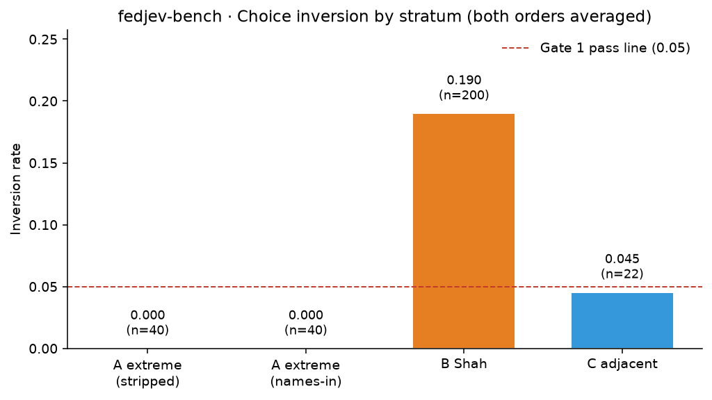
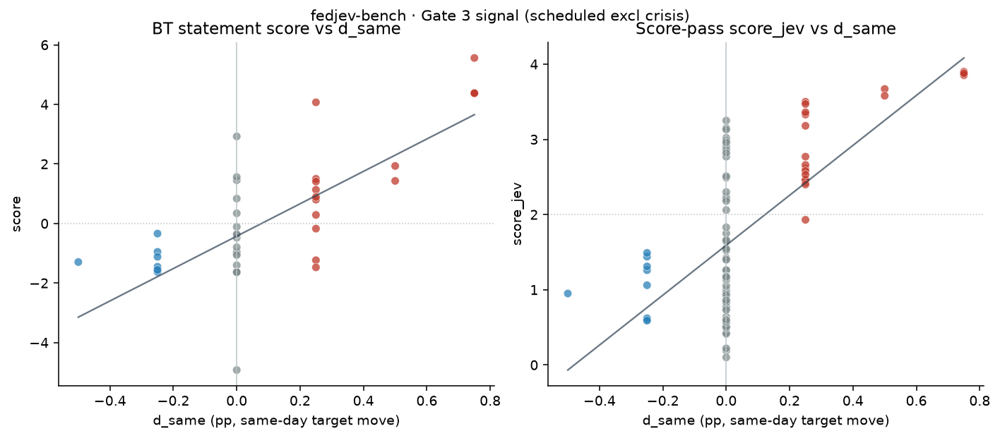

fedjev-bench — Analysis
run_id: fedjev-2026-09-20
model: jev-1.13.0 (TypeSafe SystemOne)
criterion (exact): more hawkish about inflation
repo: maybern-tripp-smith/fedjev-bench
pages: https://maybern-tripp-smith.github.io/fedjev-bench/
Companion short report: REPORT.md. Machine-readable gates: results/gates.json.
1. Motivation & thesis
Rate changes label policy. Jev labels text.
Central-bank watchers often treat the same-day federal-funds target move (d_same) as ground truth for how “hawkish” an FOMC communication was. That collapses two different objects:
1. Policy outcome — what the Committee voted (hike / hold / cut; dissents).
2. Communicated stance — how the Chair’s opening remarks (and related text) talk about inflation, the labor market, and the policy path.
On action days these often move together. On holds, and especially across regimes (2020 cuts vs 2022–23 holds with hawkish tone vs 2026 hawkish holds with dissents), they need not. The pre-registered claim of this bench is:
If a text model can rank obvious hawk documents above obvious dove documents (Gate 1), track the rate series on scheduled action days (Gate 3), and still put holds above cuts when
d_same=0on the hold side (Gate 4), then it is reading tone, and the rate series alone is the wrong sole GT.
Gate 4 is therefore not a bug to paper over — it is the result of interest.
2. Related work
| Work | What it contributes | How we use it |
|---|---|---|
| jsort (keltokhy/jsort) | Fed statement ranking / bench/fed.py label formulas; published Spearman vs same-day move ≈ +0.46 | Label construction (d_same, d_90, d_2y); Gate 3 signal line (+0.30) and published reference (+0.46) |
| Shah et al. FOMC hawkish-dovish (gtfintechlab/fomc-hawkish-dovish; CC-BY-NC 4.0) | Sentence-level labels 0=dovish, 1=hawkish, 2=neutral | Stratum B pairs (hawk vs dove sentences); Gate 2 report-only |
| FedLock (jnathan9.github.io/fedlock) | Independent hawkishness scores for press conferences / speeches | Gate 7 consistency check (report-only) |
This bench adds: (i) a frozen three-stratum gold set, (ii) TypeSafe/Jev Choice with both presentation orders, (iii) Bradley–Terry aggregation on statement pairs, (iv) pre-registered pass lines, and (v) cost/latency as first-class artifacts.
3. Data
Corpora
| Corpus | Path | Role |
|---|---|---|
| Chair presser openings | data/clean/statements.jsonl (~95 docs) | Document-level Choice + Score |
| Shah sentences | data/clean/sentences.jsonl | Stratum B |
| Meeting calendar + FRED labels | data/labels/meetings.parquet | d_same, d_90, d_2y, dissent counts, exclusions |
| FedLock snapshot | data/raw/fedlock/data.json | Gate 7 |
| FRED CSVs | data/raw/fred/ | DFEDTARU, DGS2 (no API key) |
Statements are drawn from federalreserve.gov press conference openings (public U.S. government works; see DATA.md). Shah raw dumps are not redistributed in the public tree (CC-BY-NC); we ship attribution + download instructions and the derived sentences.jsonl used for this run.
FRED labels (aligned with jsort bench/fed.py)
- -
d_same= DFEDTARU[t+1] − DFEDTARU[t−1] (pp; new range effective next day) - -
y_action= sign(d_same) ∈ {+1, 0, −1} - -
d_90= DFEDTARU[t+90] − DFEDTARU[t] (when history allows) - -
d_2y= DGS2[t] − DGS2[t−1] - -
n_hawk_dissent/n_dove_dissentfrom “Voting against …” paragraphs (best-effort)
Exclusions (pre-registered)
- - Exclude from main analysis: 2020-03-03, 2020-03-15 (unscheduled / intermeeting cuts) and any other
is_scheduled=false/exclude_mainrows. - - Flag, do not drop: 2023-03-22 (SVB) —
flag_svb=true.
Pair strata (frozen before any Jev call)
| Stratum | source | n | Construction |
|---|---|---|---|
| A — easy | extreme | 40 | 50–75 bp hike openings vs Mar 2020–Jan 2021 ease/hold-at-zero; gold = hike side |
| B — Shah | shah | 200 | Hawkish vs dovish sentences only; seed 20260920 |
| C — adjacent | adjacent | 22 | Consecutive scheduled meetings with statements; gold when sign(Δ d_same) ≠ 0 |
Manifest: data/pairs/PAIR_MANIFEST.md. Do not mutate data/pairs/gold_pairs.jsonl after scoring starts.
4. Method
Choice (primary)
- - Criterion string (exact):
more hawkish about inflation - - Prompt: “Which of Text A or Text B is more hawkish about inflation”
- - Options: Text A / Text B
- - Meta stripping via
scripts/strip_meta.py(speaker names, titles, meeting dates → placeholders) for the main run - - Both presentation orders
abandba; probabilities mapped back to original gold sides and averaged - - Inversion = averaged winner ≠ gold
Score (secondary)
Five levels: much more dovish / somewhat dovish / neutral / somewhat hawkish / much more hawkish → continuous score_jev on statements.
Bradley–Terry (BT) fit
- - Inputs: Stratum A + C Choice probabilities (Shah excluded — sentence-level)
- - Fit yields per-statement
score(+ SE, n_pairs) inresults/statement_scores.csv - - This run: n_statements=48, n_comparisons=124, converged=True, position bias γ=−0.1378
- - Graph is sparse relative to a complete tournament — interpret SE and hold-day correlations with that in mind
Caching
Answers under runs/jev/cache/. Cache key material includes model, criterion, text hashes, and order. Gate 6 name ablation appends |names=1 so unstripped calls never collide with stripped cache.
Entry points
export TYPESAFE_API_KEY=... # env only
python score.py --live --full
python scripts/run_name_ablation.py --live # Gate 6
python scripts/analyze_gates.py5. Pre-registered gates
| # | Gate | Metric / rule | Pass line |
|---|---|---|---|
| 1 | Easy-pair inversion | Stratum A; both orders | inversion ≤ 0.05 |
| 2 | Sentence discrimination | Stratum B; inversion + Brier | report only |
| 3 | Statement score vs action | Spearman(BT score, d_same) scheduled excl crisis; action vs hold splits | Spearman ≥ +0.30 (signal); jsort pub. +0.46 |
| 4 | Holds vs cuts | mean score holds (d_same=0) vs cuts (d_same<0) | mean(holds) > mean(cuts) |
| 5 | Forward path | Spearman vs d_90 | secondary |
| 6 | Order/name stability | Stratum A with names in + order flip; Δ inversion | Δ inversion ≤ 0.05 |
| 7 | FedLock consistency | Spearman vs FedLock hawkishness | report only |
6. Results
Verdict
| # | Gate | Result | Detail |
|---|---|---|---|
| 1 | Easy-pair inversion | PASS | rate=0.0000 (n=40, inverted=0) |
| 2 | Sentence discrimination | report | inv=0.1900, Brier=0.1384, p(gold)=0.7451 (n=200) |
| 3 | Action ranking | PASS | BT all=+0.623 (n=46); action_days=+0.851 (n=24) |
| 4 | Holds vs cuts | PASS | BT: holds=−0.720 (n=22) > cuts=−1.239 (n=8); gap=0.519 |
| 5 | Forward path | secondary | BT vs d_90=+0.357 (n=44); score_jev=+0.511 (n=91) |
| 6 | Order/name stability | PASS | names-in inv=0.000; baseline=0.000; Δ=0.000 |
| 7 | FedLock consistency | report | BT=+0.685 (n=46); score_jev=+0.946 (n=90) |
Inversion by stratum

| Stratum | n | inverted | inversion | mean p(gold) | mean Brier | order-flip |
|---|---|---|---|---|---|---|
| A extreme (stripped) | 40 | 0 | 0.000 | 1.000 | 0.000 | 0.000 |
| A extreme (names-in) | 40 | 0 | 0.000 | 1.000 | 0.000 | 0.000 |
| B Shah | 200 | 38 | 0.190 | 0.745 | 0.138 | 0.105 |
| C adjacent | 22 | 1 | 0.045 | 0.856 | 0.046 | 0.091 |
Inverted C pair: C018. Stratum A: none.
Gate 3 — action ranking (deeper)

| Slice | BT Spearman ρ [95% CI] | n |
|---|---|---|
| All scheduled (excl crisis) | +0.623 [+0.398, +0.787] | 46 |
action_days (d_same≠0) | +0.851 [+0.652, +0.937] | 24 |
| hold_days vs (n_hawk−n_dove) | −0.192 [−0.513, +0.274] | 22 |
hold_days vs d_2y | −0.135 [−0.594, +0.349] | 22 |
Secondary score_jev: all=+0.589 (n=93); action=+0.918 (n=30).
Reading: On action days Jev’s BT ranking tracks the rate move tightly (ρ≈0.85), clearing both the +0.30 signal line and jsort’s published +0.46 reference. On holds, neither net dissent nor same-day 2y yield change correlates cleanly with BT scores — expected if holds mix hawkish-hold and dovish-hold communications while d_same is identically zero.
Gate 4 — holds vs cuts (the thesis gate)
| Score | mean holds (n) | mean cuts (n) | mean hikes (n) | gap (holds−cuts) |
|---|---|---|---|---|
| BT | −0.720 (22) | −1.239 (8) | +1.827 (16) | +0.519 |
| score_jev | 1.457 (63) | 1.036 (9) | 3.067 (21) | +0.421 |
Holds sit above cuts on the hawkishness axis even though both can have d_same≤0 on the cut side and d_same=0 on holds. That is exactly the rate-label / text-label disagreement the bench was built to surface: 2023–26 hawkish holds (and hawkish-hold-with-dissents) are not “as dovish as 2020 cuts” in the text, and Jev says so.
Gate 2 / Shah — 19% errors
Stratum B inversion 19% (38/200) with mean p(gold)=0.745 is far from random (50%) but not near the document-level A/C ceiling. Likely contributors:
- - Sentence fragments lose document context (hedges, conditionals, “however” clauses).
- - Shah labels are themselves model/human judgments with residual noise.
- - Short texts → higher Choice entropy; order-flip rate 10.5% supports that.
Treat Gate 2 as a discrimination stress test, not a pass/fail of the document thesis.
BT sparsity (n=48 statements)
Only 48 statements enter the BT graph via 124 A+C comparisons. Many meetings appear in few edges; SEs are non-trivial. Gate 3/4 primary metrics therefore use BT where available and report score_jev (95 docs, direct Score pass) as a denser secondary. Expanding adjacent and cross-regime pairs would densify the graph in a follow-up run — without unfreezing the current gold set for this run_id.
Gate 6 — name ablation
Re-ran Stratum A Choice both orders with raw_text unstripped; cache keys include |names=1.
| Baseline inversion (stripped) | 0.000 |
| Names-in inversion | 0.000 |
| Δ | 0.000 ≤ 0.05 → PASS |
| Add-on cost | $0.010955 (80 calls, 260,824 input tokens) |
Caveat: presser openings rarely embed Chair names/ISO dates in-body, so strip_meta edits are small for most Stratum A docs. The ablation still confirms order-stable judgments under the unstripped presentation and isolates the cache namespace.
Gate 7 — FedLock
BT vs FedLock hawkishness ρ=+0.685 (n=46); score_jev ρ=+0.946 (n=90). Independent text scores agree with Jev — especially the direct Score pass — supporting that we are not merely fitting FRED noise.
7. Cost & latency (first-class)
Pricing (jev-1.13.0): $0.042 / Mtok input; output free (TypeSafe pricing).
Main run
| Total USD | $0.031204 |
| Input tokens | 742,941 |
| Output tokens | 18,049 (free) |
| n_calls | 619 (524 Choice + 95 Score) |
| USD / gold pair | $0.000119 |
By stratum: extreme $0.01096; shah $0.00675; adjacent $0.00605; score_docs $0.00744.
Name ablation add-on
| USD | $0.010955 |
| Calls | 80 |
| Input tokens | 260,824 |
| Wall (concurrency=6) | ~3.5 s |
Grand total (main + ablation): ≈ $0.04216.
Latency
Concurrency 6. Per-call mean ≈ 214 ms (main); p95 ≈ 321 ms. Approx wall if perfect parallel ≈ 22 s for the main 619 calls (sum latency / 6).
Artifacts: results/cost.json, results/timing.json, results/name_ablation.json.
8. Limitations
1. Dissent scrape partial — ~10/124 meetings remain against_unclear; hold-day dissent correlations are noisy.
2. Presser gaps — meetings without openings keep URL patterns (may 404); Score/BT coverage ≠ full calendar.
3. BT sparsity — n=48 statements / 124 comparisons; prefer CIs and secondary score_jev when interpreting holds.
4. Name ablation low contrast — openings seldom contain strip-able names/dates; Δ=0 is informative for order stability more than for “names as confounders.”
5. Shah NC license — public tree does not vendor the full upstream dump; reproduce Stratum B from upstream + our pair freeze.
6. Single criterion / model — results are for more hawkish about inflation on jev-1.13.0 only.
7. Forward path (d_90) — secondary; recent meetings lack 90-day follow-through.
9. Reproducibility
git clone https://github.com/maybern-tripp-smith/fedjev-bench
cd fedjev-bench
python -m venv .venv && source .venv/bin/activate
pip install typesafe-sdk pandas pyarrow openpyxl scipy matplotlib
# Data half (pairs already frozen for this run_id — do not rebuild gold)
# Optional refresh: scripts/prepare_*.py, prepare_meetings_labels.py
export TYPESAFE_API_KEY=ts_... # from https://typesafe.ai — never commit
python score.py --live --full # or rely on committed runs/jev/cache
python scripts/run_name_ablation.py --live
python scripts/analyze_gates.pyFrozen inputs: data/pairs/gold_pairs.jsonl, data/clean/, data/labels/.
Outputs: results/, runs/jev/, REPORT.md, this file.
10. Ethics / data license notes
| Asset | License / status | Notes |
|---|---|---|
| Code in this repo | MIT (LICENSE) | |
| FOMC statements / pressers | U.S. government works (public domain-ish) | Cite federalreserve.gov; no Fed endorsement implied |
| FRED series | St. Louis Fed terms | CSV via fredgraph.csv; attribute FRED |
| Shah hawkish-dovish | CC BY-NC 4.0 | Attribution required; non-commercial; see DATA.md for download |
| jsort | MIT | Cite Eltokhy / keltokhy/jsort |
| FedLock | Upstream site terms | Snapshot for Gate 7 only |
| TypeSafe / Jev outputs | Your API agreement | Do not commit API keys |
This project is research instrumentation, not investment advice. Hawkish/dovish labels are model judgments under a fixed criterion string.
11. Comparison — Claude Haiku 4.5 vs Jev
Full Choice re-run of all 262 gold pairs × both orders with meta-stripped text and criterion more hawkish about inflation.
| Jev 1.13.0 | Haiku 4.5 (claude-haiku-4-5-20251001) | |
|---|---|---|
| Protocol | TypeSafe SystemOne Choice | Anthropic Messages → JSON {winner,p_A,p_B} |
| Pricing | $0.042 / Mtok in (out free) | $1 / Mtok in · $5 / Mtok out |
| n Choice calls | 524 | 524 |
| Choice USD | $0.0238 | $0.6363 |
| USD / gold pair | $0.000091 | $0.00243 (~27×) |
| Mean latency | 207 ms | 676 ms (~3.3×) |
| p50 / p95 latency | 196 / 304 ms | 621 / 938 ms |
| Input tokens | ~566k (Choice strata) | 500,252 |
| Output tokens | ~16.2k (free) | 27,208 ($0.136) |
Inversion (both orders averaged)
| Stratum | Jev inv | Haiku inv | Δ (H−J) | Jev Brier | Haiku Brier | Jev order-flip | Haiku order-flip |
|---|---|---|---|---|---|---|---|
| A extreme | 0.000 | 0.000 | 0.000 | 0.000 | 0.0005 | 0.000 | 0.000 |
| B Shah | 0.190 | 0.170 | −0.020 | 0.138 | 0.144 | 0.105 | 0.240 |
| C adjacent | 0.045 | 0.045 | 0.000 | 0.046 | 0.109 | 0.091 | 0.091 |
Takeaways
1. Accuracy: On easy document pairs (A) and adjacent statements (C), both models match (0% / 4.5% inversion). On Shah sentences (B), Haiku is slightly better (17% vs 19%) but with much higher order-flip (24% vs 10.5%) — less presentation-stable despite the edge on averaged winners.
2. Calibration / Brier: Jev’s document-level Brier on A/C is near-perfect; Haiku’s C Brier is worse (0.109 vs 0.046) even when inversion ties — probabilities are softer / less peaked.
3. Speed: Jev Choice mean latency ~3.3× lower (207 vs 676 ms) under similar concurrency regimes (Jev 6 / Haiku 8).
4. Price: Jev Choice is ~27× cheaper per gold pair at the listed list prices. Haiku’s absolute spend for this bench was still modest ($0.64) and intentionally not price-gated.
5. Protocol caveat: Jev returns native Choice probabilities from SystemOne; Haiku probabilities are model-reported JSON. Inversion (winner) is the fairest head-to-head metric; treat Brier as secondary.
Artifacts: results/haiku_comparison.json, results/pair_judgments_haiku.jsonl, runs/haiku/, results/haiku_cost.json, results/haiku_timing.json.
export ANTHROPIC_API_KEY=...
python scripts/run_haiku_comparison.py --live --concurrency 8Citation
See CITATION. Short form:
Smith, T. (2026). *fedjev-bench*: TypeSafe/Jev hawkishness ranking on FOMC text (
fedjev-2026-09-20). https://github.com/maybern-tripp-smith/fedjev-bench